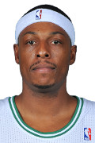

The Greatest of All Time?
It has been debated in barbershops across the world who is the G.O.A.T of the N.B.A. Jordan, Kobe, or LeBron?
Let’s compare career Stats in Points, Rebounds, Assist, Steals, and Blocks for the below all-time NBA greats and see who is really the greatest
And squash the debate once and for all!
You can review the list below and get more details about the players, but you should hit the GOAT Time button above to get this comparison started.
Michael Jordan
 Michael Jeffrey Jordan
(Mike, Air Jordan, M.J., His Airness, Money, Black Cat, Mr. June, G.O.A.T., Superman, Captain Marvel, Black Jesus)Position: Small Forward and Shooting Guard ▪ Shoots: Right6-6, 195lb (198cm, 88kg)Born: February 17, 1963 (Age: 57-166d) in Brooklyn, New York
Michael Jeffrey Jordan
(Mike, Air Jordan, M.J., His Airness, Money, Black Cat, Mr. June, G.O.A.T., Superman, Captain Marvel, Black Jesus)Position: Small Forward and Shooting Guard ▪ Shoots: Right6-6, 195lb (198cm, 88kg)Born: February 17, 1963 (Age: 57-166d) in Brooklyn, New York
Kobe Bryant
 Kobe Bean Bryant ▪(Black Mamba, KB24, Vino, Showboat, Little Flying Warrior, The Eighth Man)Position: Small Forward and Shooting Guard ▪ Shoots: Right6-6, 212lb (198cm, 96kg)Born: August 23, 1978 in Philadelphia, Pennsylvania us Died: January 26, 2020 (Aged 41-156d)
Kobe Bean Bryant ▪(Black Mamba, KB24, Vino, Showboat, Little Flying Warrior, The Eighth Man)Position: Small Forward and Shooting Guard ▪ Shoots: Right6-6, 212lb (198cm, 96kg)Born: August 23, 1978 in Philadelphia, Pennsylvania us Died: January 26, 2020 (Aged 41-156d)
Lebron James
 LeBron James LeBron Raymone James ▪ Twitter: KingJames(King James, LBJ, Chosen One, Bron-Bron, The Little Emperor, The Akron Hammer, L-Train)Position: Power Forward and Point Guard and Small Forward and Shooting Guard ▪ Shoots: Right6-9, 250lb (206cm, 113kg)
LeBron James LeBron Raymone James ▪ Twitter: KingJames(King James, LBJ, Chosen One, Bron-Bron, The Little Emperor, The Akron Hammer, L-Train)Position: Power Forward and Point Guard and Small Forward and Shooting Guard ▪ Shoots: Right6-9, 250lb (206cm, 113kg)
Larry Bird
 Larry Joe Bird (Larry Legend, The Hick from French Lick, Kodak, The Great White Hope)Position: Power Forward and Small Forward ▪ Shoots: Right 6-9, 220lb (206cm, 99kg) Born: December 7, 1956 (Age: 63-238d) in West Baden, Indiana
Larry Joe Bird (Larry Legend, The Hick from French Lick, Kodak, The Great White Hope)Position: Power Forward and Small Forward ▪ Shoots: Right 6-9, 220lb (206cm, 99kg) Born: December 7, 1956 (Age: 63-238d) in West Baden, Indiana
Tim Duncan
Timothy Duncan (Timmy, The Big Fundamental, Groundhog Day, Old Man Riverwalk, The Stone Buddha) Position: Center and Power Forward ▪ Shoots: Right 6-11, 250lb (211cm, 113kg)Born: April 25, 1976 (Age: 44-098d) in St. Croix, U.S. Virgin Islands
Kevin Durant
 Kevin Wayne Durant ▪ (Durantula, KD, Slim Reaper, The Servant, Green Room) Position: Power Forward and Small Forward and Shooting Guard ▪ Shoots: Right 6-10, 240lb (208cm, 108kg) Team: Brooklyn NetsBorn: September 29, 1988 (Age: 31-307d) in Washington, District of Columbia
Kevin Wayne Durant ▪ (Durantula, KD, Slim Reaper, The Servant, Green Room) Position: Power Forward and Small Forward and Shooting Guard ▪ Shoots: Right 6-10, 240lb (208cm, 108kg) Team: Brooklyn NetsBorn: September 29, 1988 (Age: 31-307d) in Washington, District of Columbia
Magic Johnson
Earvin Johnson Jr. ▪ MagicJohnson (Magic, Buck, E.J. the Deejay, Tragic) Position: Power Forward and PointGuard and Shooting Guard ▪ Shoots: Right 6-9, 215lb (206cm, 97kg) Born: August 14, 1959 (Age: 60-353d) in Lansing, Michigan
Paul Pierce
Paul Anthony Pierce ▪ (The Truth, P-Double) Position: Small Forward and Shooting Guard ▪ Shoots: Right 6-7, 235lb (201cm, 106kg) Born: October 13, 1977 (Age: 42-293d) in Oakland, California
Jerry West
 Jerry Alan West (Mr. Clutch, Zeke From Cabin Creek, The Logo, Mr. Outside, Cabin Creek Comet) Position: Point Guard and Shooting Guard ▪ Shoots: Right 6-2, 175lb (188cm, 79kg) Born: May 28, 1938 (Age: 82-065d) in Chelyan, West Virginia
Jerry Alan West (Mr. Clutch, Zeke From Cabin Creek, The Logo, Mr. Outside, Cabin Creek Comet) Position: Point Guard and Shooting Guard ▪ Shoots: Right 6-2, 175lb (188cm, 79kg) Born: May 28, 1938 (Age: 82-065d) in Chelyan, West Virginia